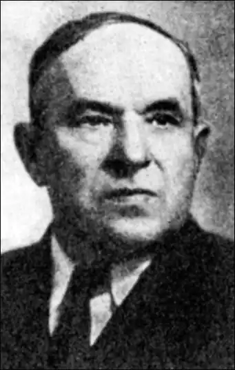

Володимир ГЖИЦЬКИЙ
Гжицький Володимир Зенонович народився 15 жовтня 1895 року в с. Острівець на Тернопільщині в сім'ї вчителя. Закінчив місцеву школу, а потім гімназію в Тернополі. 1918 року його було мобілізовано до австрійської армії, а коли Австро-Угорщина розпалася, він став офіцером Української галицької армії (УГА) 1919 року перейшов Збруч і дістався до Харкова, де й закінчив інститут сільського господарства й лісництва. Але працювати довелося в системі Наркомосу УРСР.
Водночас поет — початківець вступив до Спілки селянських письменників "Плуг", брав активну участь у створенні літературної організації "Західна Україна", до якої ввійшло 57 письменників, котрі перебралися на Радянську Україну з пілсудської Польщі. Тоді ж видав першу (і єдину) збірку віршів "Трембітині тони" (1924). Згодом Гжицький спробував свої сили в написанні новел з життя галицького краю. Ці його спроби гаряче підтримав П. Тичина як один із редакторів журналу "Червоний шлях". 1928 року Гжицький у складі кінописьменницької експедиції, яку очолював О. Довженко, вирушив на Алтай для вивчення життя тамтешніх жителів ойротів. Наслідком поїздки став роман "Чорне озеро" (1929), що завоював письменникові всесоюзне визнання. Проте постановка гострої проблеми національних взаємин у Радянському Союзі вже тоді була страктована органами ДПУ як "викривлення політики, яку проводив Сталін щодо нечисельних народностей СРСР". І хоча в 1932 році В. Гжицький випустив актуальний роман "Захар Вовгура" про шахтарів Донбасу, доля письменника була визначена тимчасовим перебуванням у лавах УГА та романом "Чорне озеро". 7 грудня 1933 року в Харківському облуправлінні держбезпеки був виписаний ордер № 32 на арешт В. Гжицького. У постанові на арешт йому інкримінувалася приналежність до контрреволюційної організації УВО (Українська військова організація) та участь у терористичній діяльності. 1 січня 1934 року на черговому допиті Гжицький змушений був "визнати", що належав до УВО з осені 1930 року, входив до складу Харківської групи під керівництвом С. Пилипенка. До того ж осередку нібито належали А. Панів, М. Дукин, Д. Грудина та А. Головко. В обвинувальному висновку оперуповноважений Грушевський і начальник секретно-політичного відділу ДПУ УРСР Долинський виносили справу В. Гжицького на розгляд судової трійки ДПУ УРСР і пропонували ув'язнити його на п'ять років у виправне — трудових таборах, Судова трійка при колегії ДПУ протоколом від 23 лютого 1934 року постановила: "Гжицького Володимира Зеноновича заслати до виправно-трудового табору терміном на ДЕСЯТЬ років..." Відбував заслання письменник у республіці Комі. 1946 року спеціальним табірним судом був знову засуджений на 4 роки ув'язнення. Але й після відбуття цього покарання В. Гжицький лишався з тавром контрреволюціонера, а тому міг влаштуватися до праці лише в обмежених регіонах країни. Після смерті Сталіна засланець Гжицький звернувся до Ради Міністрів СРСР з проханням переглянути його справу. 17 травня 1954 року старший слідчий КДБ Гребньов, вивчивши її матеріали, дійшов висновку: заяву про перегляд справи "залишити без задоволення". Ще два роки потрібно було всіляких перетрактацій, поки трибунал Київського військового округу на засіданні від 21 лютого 1956 року ухвалив: "Постанову судової трійки при колегії ДПУ УРСР від 23 лютого 1934 року щодо Гжицького Володимира Зеноновича скасувати і справу про нього провадженням припинити за відсутністю в його діях складу злочину". Повернувшись на Україну, письменник ще 17 років мав змогу творчо працювати. Написав кільканадцять повістей та оповідань, історичний роман "Опришки", автобіографічну трилогію "У світ широкий", "Великі надії", "Ніч і день". Помер Володимир Гжицький 19 грудня 1973 року. Володимир Мельник ЛУ №26 (4435)27.06.1991